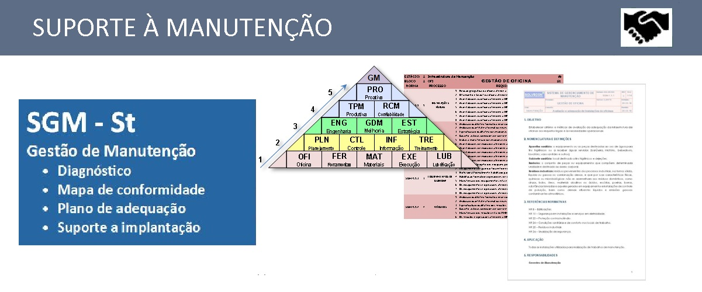

PROCESSO E MANUTENÇÃO
Execução de auditorias em gestão de manutenção e auditorias de processo produtivo com vistas a otimização de resultados operacionais.
AUDITORIA DE PROCESSO.
Com profissionais qualificados, realizamos auditoria em processos de moagem para diagnosticar gaps existentes na instalação e ou operação, elaborando propostas técnicas de melhoria que representem ganhos mensuráveis de produtividade e redução de custo.

AUDITORIA DE MANUTENÇÃO.
